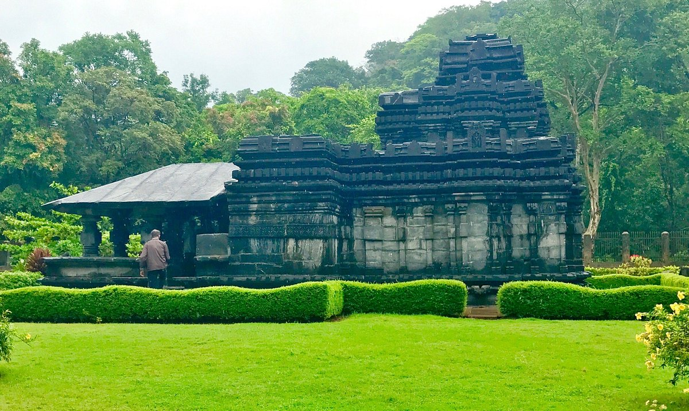

Temples and piligrimages in Goa
Shri Mangueshi Temple
Shri Mangueshi Temple is one of the most famous temples in Goa, dedicated to Lord Shiva (Manguesh). It is known for its beautiful deepstambha (lamp tower) and peaceful surroundings.
- Religious Significance: Dedicated to Lord Shiva.
- Location: Ponda, Goa.
- Special Feature: Seven-storey lamp tower.
- Click here for official information.
Shanta Durga Temple
Shanta Durga Temple is dedicated to Goddess Durga, who is believed to mediate between Lord Shiva and Lord Vishnu. It is one of the largest temple complexes in Goa.
- Religious Importance: Dedicated to Goddess Durga.
- Location: Kavlem, Goa.
- Festival: Navratri celebrations.
- Click here for details.
Mahadeva Temple, Tambdi Surla

Tambdi Surla Temple is one of the oldest temples in Goa, dating back to the 13th century. It is dedicated to Lord Shiva and is built in Kadamba-style architecture.
- Historical Importance: Oldest surviving temple in Goa.
- Architecture: Kadamba style.
- Location: Bhagwan Mahavir Wildlife Sanctuary.
- Click here for more information.
Mahalasa Narayani Temple
Mahalasa Narayani Temple is dedicated to Goddess Mahalasa, considered an incarnation of Lord Vishnu. It is known for its elegant architecture and tall deepstambha.
- Religious Significance: Dedicated to Goddess Mahalasa.
- Location: Mardol, Goa.
- Special Feature: Tall lamp tower.
- Click here for details.
Saptakoteshwar Temple
Saptakoteshwar Temple is an important temple dedicated to Lord Shiva and is considered one of the six great temples of the Konkan region.
- Religious Importance: Dedicated to Lord Shiva.
- Location: Narve, Goa.
- Historical Significance: Ancient temple of the Kadamba dynasty.
- Click here for more information.